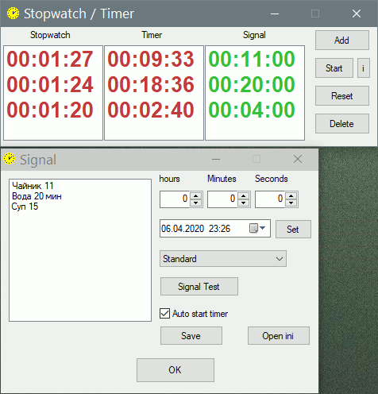

PureBasic
StopwatchTimer
Назначение
Секундомер, таймер.

Взаимосвязанные
StopwatchПри нажатии кнопки "Добавить" открывается окно для указания времени таймера и сигнала оповещения. Интервал времени задаётся в полях "Часы", "Минуты", "Секунды". В раскрывающемся списке выбрать "Открыть", чтобы выбрать файл сигнала. Это может быть как музыка так и любой другой файл, например исполняемый (EXE). Кнопка "Тест сигнала" позволяет проверить работу сигнала, это связано с тем, что если выключен звук, то вы не получите звуковое оповещение, если отсутствует файл, то не будет результата запуска. Для Linux при отсутствии воспроизведения переименуйте имя файла в латинские буквы и по возможности без пробелов.
Если заданный интервал времени используется часто, например при приготовлении блюд, то можно сохранить таймер кнопкой "Сохранить", при этом имя таймера появится в списке и сохранится в ini-файл. Теперь для установки времени и сигнала оповещения нужен 1 клик на имени таймера в списке. Семплы можно открыть из контекстного меню главного окна
Если нужно установить напоминание в заданное время, например в 17:30, но чтобы не вычислять интервал времени от текущего до заданного просто установите время сигнала оповещения в строке даты и нажмите кнопку "Задать", при этом будут заполнены поля "Часы", "Минуты", "Секунды", т.е. интервал вычислится автоматически.
Кнопка "Открыть ini" помогает вручную конфигурировать файл, особенно при переносе программы на другой компьютер, где файлы для оповещения не существуют и можно быстро скопировать путь и заменить все пути на существующий.
"Автостарт таймера" - при нажатии "ОК" таймер добавляется и сразу будет запущен. Не исключено, что понадобиться заранее приготовить таймеры, а потом их запускать с помощью кнопки "Старт"
Правой кнопкой мыши можно выбрать семпл без открытия окна настройки кнопкой "Добавить".
Запуск таймера осуществляется кнопкой "Старт" или автоматически при добавлении таймера, если стоит галка "Автостарт таймера". Если таймеров несколько надо выбрать таймер в списке. По умолчанию выбранный является добавленный таймер, т.е. последний в списке.
Кнопка "i" показывает информацию о таймерах, время запуска таймера и время завершения таймера. Это нужно в случае, если вы упустили таймер. Например таймер остановился, а сколько времени прошло с того момента как он был запущен? Например поставили таймер для закипания воды 15 минут, потом убавили на медленный огонь и мясо варится примерно полтора часа, но через время забыли во сколько было закипание, вот тут то можно посмотреть время запущенного 15-ти минутного таймера и от него подсчитать, прошло ли полтора часа.
Просто поставить таймер в 0 и можно снова его стартануть.
Удалить завершившийся таймер или неправильно заданный.